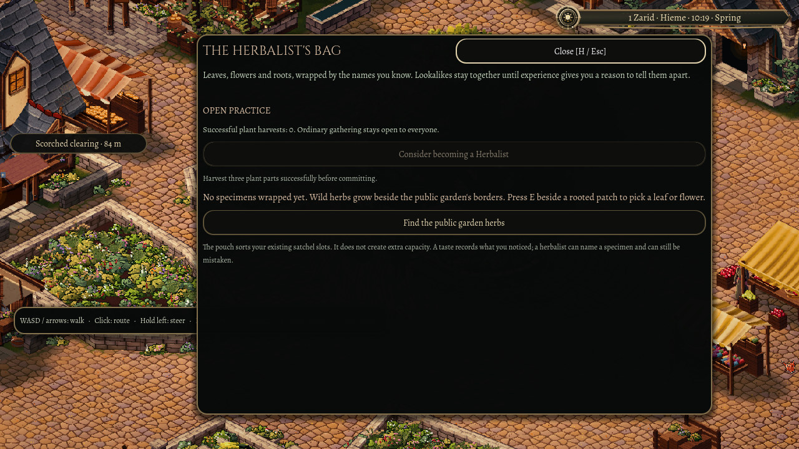
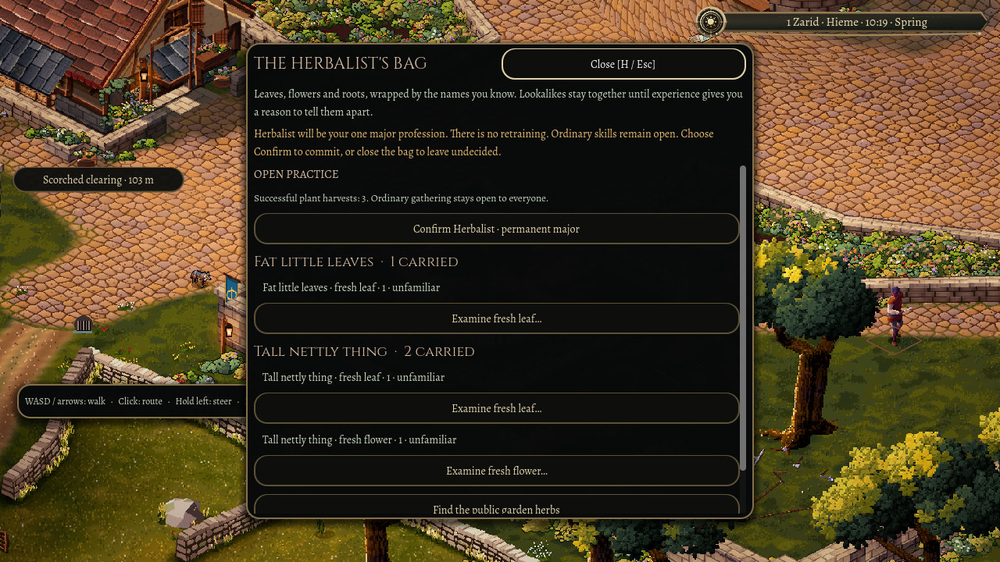

Choosing the Herbalist's path
Picking a plant is a small act. Doing it again, and returning with another carefully wrapped part, begins to look like a practice.
Oakwell now remembers successful plant harvests as part of your character. Open the herbalist's bag with H to see that history. Failed attempts do not advance it, and reading the bag does not turn uncertainty into a certain plant name.

After three successful harvests, you can consider becoming a Herbalist. The first choice explains the commitment. A separate confirmation makes it permanent: one major profession, with no retraining. Closing the bag leaves you undecided.

A profession is not permission to touch a plant. Ordinary gathering remains open before and after the choice. A Herbalist can keep gathering, and the next successful harvest still counts.
Returning to the town keeps that earned history, the chosen identity and the specimens themselves together. That history belongs to the same saved character as your belongings.
This is the first native commitment step. Special harvest techniques and the Apothecary's remedy work still have their own work ahead.